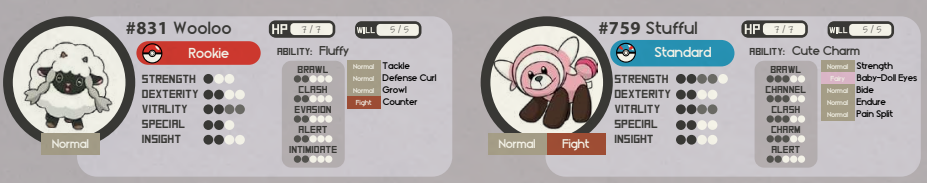
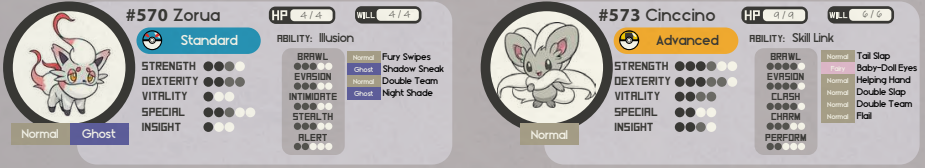
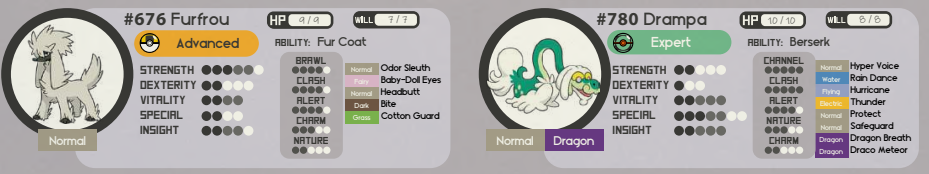

每個寶可夢訓練家都有這樣的夢想，就是參加至少一次「寶可夢聯盟挑戰」這場刺激的冒險。
這是一場橫跨整個地區的宏大旅途，能夠訓練並證明你的技巧。所有最偉大且最知名的訓練家都曾參加過這場冒險，且據說這也是成為頂尖訓練家的唯一方法。
在寶可夢聯盟挑戰期間，你將會面對大量的危險情境來考驗自己做為寶可夢訓練家的技巧、你寶可夢夥伴的力量、你自己的求生能力、以及你的聰明才智。
如果你想完成這個挑戰你至少需要打敗 8 個道館、獲得年度錦標賽的資格、穿越冠軍之路、直面四天王；並且在最後的最後戰勝冠軍。
這是一個挑戰你身體與心智極限的又長又困難的旅程。
寶可夢道館#
這個挑戰的第一步是拜訪寶可夢道館並打敗其中的道館館主。
因此你需要創造不止是一位，而是 8 個挑戰性遭遇。
所有寶可夢道館館主都是專家或者王牌階級，但是他們會帶著一隊較低階級的寶可夢隊伍以讓經驗不足的訓練家們有機會在平等的條件之下測試他們的能力。
記住：道館館主是寶可夢聯盟派出的指導員代表，他們的目的是為了教導你寶可夢、屬性優勢與戰鬥策略。
創造道館遭遇時，別只想著階級和屬性優勢，你也要構思他們的戰術。
道館挑戰不該一成不變，最好的方法是你根據玩家的階級與能力來自定義遭遇。
是時候看看如何創造道館挑戰了！
說書人筆記
你並不需要提前準備好全部 8 個道館。注重在你的故事上並在玩家抵達道館時才開始準備道館遭遇吧。
道館館主遭遇
當你在創造道館館主遭遇時，你必須要考量到以下內容。
能量屬性
大部分道館僅會注重其中一種能量屬性。這是為了讓挑戰者更加輕鬆地思考戰鬥策略。
主題
沒有自尊的道館館主才會讓人踏入自己的毫無主題場館。
別只專注於能量屬性，選好概念，加入有趣點子，盡情發揮想像力吧！
高難挑戰
道館館主都是專業人士，他們通過戰鬥與指導來賺取生活費。你可以料到他們會使用意志點、TM、超階甚至是進階戰術。
具體的策略
道館館主會以某個策略作為組成隊伍的中心。玩家必須發現這個策略並選擇直面或者迂迴解決。
戰敗
如果你戰敗了你並不需要付錢；有些道館館主會為有前途的訓練家提供指導環節。
勝利獎金 & 獎勵
道館館主不僅是個要跨過去的障礙，他們也是喜歡為新訓練家指導有關寶可夢的事情的熱心人士。戰勝道館會獲得徽章、寶可夢聯盟提供的獎金、並且道館館主可能會提供一些免費贈品例如TM、攜帶道具或者他們覺得可以為你的旅途帶來幫助的任何東西。
就是這樣！隨著你不停練習創造遭遇你會逐漸掌握其中的訣竅。
如果你不太確定難度等級，每個道館裡通常都有學徒訓練家可以先與玩家對戰，他們會使用你設計的遭遇戰的低等版本；透過這樣的對戰，你就能評估是否需要對最終挑戰進行調整。
最重要的是這些挑戰會讓你的玩家尋找面對挑戰的方法。無論是重訓、收服新的寶可夢、學習新招式或者取得進階戰術。
在寶可夢以及愛中大家都是公平的。
祝你好運！是時候贏得這些徽章了！
一般系道館
道館館主資料
道館館主名為愛麗奧爾丁，一位喜歡軟綿綿毛茸茸的專家級訓練家。這個道館使用了大量的雲主題以及布偶作為裝飾。她的寶可夢可愛又柔軟不代表她的策略也是如此。

愛麗在面對新手級的訓練家時會派出毛辮羊和童偶熊。
毛辮羊是無法打破的毛茸茸牆。牠會通過很高的防禦與「變圓」來減少物理傷害，以應對敵人的物理招式。
童偶熊不僅僅通過很高的防禦來減少傷害，同時也會依靠愛的力量！牠的「迷人之軀」特性會讓敵人陷入麻煩之中。
玩家需要一個不依賴物理攻擊的策略以及對於閃避的良好運用。

愛麗在面對標準級的訓練家時會派出洗翠索羅亞和奇諾栗鼠。
通過特性，索羅亞會讓對方誤以為牠是奇諾栗鼠。「亂抓」和「影子分身」讓他盡可能地維持偽裝。
是時候來個硬茬了！奇諾栗鼠會帶著令人震驚的速度使用連續行動；如果成功使出「影子分身」，要擊中牠簡直難如登天。
屬性抗性與高防禦在這個對戰中非常重要。必中招式也非常有用。

愛麗在面對進階級的訓練家時會派出多麗米亞和她的初始夥伴，老翁龍。
和毛辮羊一樣，多麗米亞是個更加危險的物理肉盾，牠會使用「氣味偵測」以讓「頭槌」和「咬住」更有可能讓對手陷入「畏縮」。
老雲也會帶來風暴。牠的聲音如同雷鳴。帶著「守住」的牠如同空氣一般難以造成傷害，如果你奇跡性地成功弱化牠，牠的特性「怒火沖天」會讓戰場上充斥著「流星群」
對多麗米亞，使用特殊招式最好。至於老翁龍……就讓你自己想想吧。
年度錦標賽#
經歷了數個月的艱苦訓練、面對可怕危險、與野生寶可夢戰鬥、擊敗其他強大的訓練家、挑戰道館館主、在野外求生覓食、馴服新收服的寶可夢、並戰勝你自己的恐懼。
你現在將會作為一名強大的訓練家來面對你未曾見過的最難的挑戰。
寶可夢聯盟的年度錦標賽。
參與聯盟年度錦標賽可以說是一項莫大的榮耀。無論你在錦標賽中是勝是敗，對於一般人來說，這就會是漫長旅途的終點。
每一場錦標賽通常都會持續大約兩週。
這是每年唯一一場人們能夠觀賞到最高級別戰鬥的活動與場地，在這裡，最終進化階段以及極度稀有的寶可夢將伴隨著種種前所未見的招式登場，展現出一幕幕精采絕倫的對戰演出。
你在這裡看到的大部分訓練家都如同道館館主一樣強大。
他們聰明又足智多謀，你可不該小看他們。
錦標賽的賽制會將參賽者分為不同的組別並且每個組別又包含一個由 32 名訓練家組成的單敗淘汰制
第一輪 - 3 VS 3 單打對戰
富含主題的競技場、簡單的環境挑戰
第二輪 - 4 VS 4 雙打對戰
富含主題的競技場、會在替換寶可夢後變更的環境挑戰
八強賽 - 3 VS 3 單打對戰
富含主題的競技場、每經過兩個戰鬥輪就改變的環境挑戰
半決賽 - 6 VS 6 雙打對戰
空競技場、沒有環境挑戰
決賽 - 6 VS 6 單打對戰
空競技場、沒有環境挑戰
錦標賽遭遇
當你在創造錦標賽遭遇時，以下是需要考量的東西：
訓練家階級
大部分參與的訓練家都是專家級或者是王牌級，所以他們也會有相符合階級的隊伍。
混雜的挑戰等級
錦標賽內有充滿技術的訓練家也有靠著運氣混進來的訓練家。大雜燴般的組合能讓錦標賽更有真實感。
主要組別
如果你有複數玩家讓他們處於不同的組別。
讓他們在面對他們的朋友之前先體驗過錦標賽。
敗者組
第三名至第八名在輸給主要組別後依然會繼續互相競爭所以不要讓你的玩家灰心！
取得挑戰資格
錦標賽的前八名會被邀請到聯盟的總部挑戰四天王。但是他們必須通過冠軍之路才可以抵達該處。
年度錦標賽是個非常刺激的經驗。這是一場情感起伏如雲霄飛車般的旅程，完全可以作為一部獨立的編年劇來呈現。
這旨在慶祝玩家一路走來的漫長旅程，同時也提醒人們在這個世界上，有許多人懷抱著相同的夢想。這並不是關於誰更渴望、誰更值得擁有頭銜或勝利，而是關於學會與自己的缺點與優點和解，竭盡全力並且不留遺憾地前行。
冠軍之路#
就和年度錦標賽一樣，通過冠軍之路也可以作為一部獨立的編年劇來呈現。
這個地方是用來考驗訓練家生存能力的究極測試。
冠軍之路的總路長可以長達數哩，且這趟旅程可能會長達數天或甚至數週，一路上沒有任何食物補給、寶可夢中心、或友好商店。
你必須忍受艱苦、你必須想方設法生存下去，你必須抵達終點，而且你必須盡快。
無論棲息在這星球黑暗角落的那些存在是什麼，如果你們待得太久，牠們會讓你們深刻體悟：這裡可不歡迎你們。
穿越冠軍之路可不是什麼簡單的任務，大部分人們都會在裡面待上幾個小時後放棄。
當人們發現除了攜帶的傷藥以外沒有任何的回復手段時；他們就會開始學會尊重寶可夢中心這個禮物。
生命苦短，人類如此脆弱，你將在這裡體悟到自己的力量在大自然面前是多麼不值一提。
任何成功穿越冠軍之路的人，都將邁入一個全新的境界。
冠軍之路是在面對四天王和冠軍這個史詩挑戰之前的最終測試場地。
這裡非常殘酷並且不可饒恕，你必須比以前更加依靠你的朋友以及寶可夢搭檔。
單人在路上漆黑的隧道中探索可不是個好主意。
和你的朋友一起製定計劃的話就可以抵達巔峰！
踏上冠軍之路
你可能需要數週才能從頭到尾完成冠軍之路。在挑戰冠軍之路之前你必須考量到以下事情。
工具與食品
這不是在樹林或者露營場地遠足，這是一系列的洞窟和地下通道。食物、水甚至是光源都是稀缺資源。
健康來源
這裡附近可沒有寶可夢中心。你必須完成冠軍之路或者放棄。逃走並在日後嘗試並不可恥。
強大的野生寶可夢
在冠軍之路上充斥著強大的野生寶可夢，從專家級起跳。並且據其他訓練家所說傳說寶可夢棲息在內。
迷宮與謎團
你越往深處走越有不好的預感，沒有標示的道路讓你感覺黑暗深處有著什麼不是寶可夢的東西在潛伏著。
穿過漆黑的小道，堅持下去，直到你在隧道尾端看到亮光，在你奔向亮光之前確保那是正確的。
說書人筆記
把冠軍之路視為大型的地下城。加入秘密、陷阱、敵人以及待解決的謎團。在你的玩家受傷嚴重的時候獎勵他們一處新鮮水源吧。